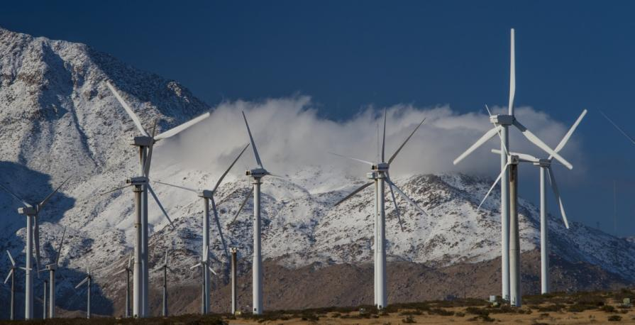

Wind Energy is a form of renewable energy that uses wind power to generate electricity or mechanical power. It is a renewable, efficient, mature and secure energy that is key to the energy transition and the decarbonisation of the economy. It offers many advantages and is one of the fastest growing energy sources across the globe. It is a sustainable and clean source of power that plays a crucial role in the global transition towards a more sustainable energy future.
In order to utilize wind energy and convert it to electrical energy, we use a device called the wind turbine. It is a device that converts the kinetic energy of the wind to electricity. The optimal use of these turbines depends on the strength of the wind. Because of this, wind farms, which consists of a large number of wind turbines and makes it possible to obtain energy in large quantities, must be set up in places where wind is particularly strong and predominant.
Wind turbines consist of large blades, a rotor, a shaft and a generator. When wind blows on the large blades, the blades rotate. The mechanical energy produced by the blades is then transferred to the rotor, which is connected to the shaft. The shaft then turns the generator which then produces electrical energy. This electricity can be used to power houses, businesses, and other electrical devices. Furthermore, the bigger the turbine, the higher the amount of electricity produced. 
Overall, wind energy provides a solution in the fields of enviromental, economic, social, and energy related aspects. It provides a great alternative for fossil fuels and overall contributes to the fight against global warming. For this reason, countries should start switching to renewable resources, such as wind energy, to help develop said countries and lessen the effect of climate change.
Onshore (land-based) wind farms make up all wind farms in the Philippines as of 2021. The Philippines Offshore Wind Roadmap, which was published on April 20, 2022 by the Department of Energy and the World Bank Group, shows that the nation has a technical offshore wind potential of 178GW. Offshore (water-based) wind farms, in contrast to onshore wind farms, are still in the early stages of development and currently account for only 0.3% of all wind power installations worldwide, or 121.4MW. However, offshore wind farms have a huge potential because they are located in oceans and have a larger coverage area. Moreover, offshore wind farms offer a better capability for power production because wind also blows more forcefully at oceans and seas. With the country's geography and it being surrounded by water, wind turbines can be a lot more effective and therefore have more potential for producing more energy.
The Philippines has made several wind farms since 2005 in various regions. According to the Department of Energy (DOE), wind energy in the Philippines accounts for 1.6% of the country's total capacity for both renewable and non-renewable energy sources as of 2020. Today, the country has 7 different wind farms which produce a total amount of 443MW in 2022. According to the National Renewable Energy Laboratory, the total wind electric potential from areas with good to excellent wind resource is conservatively estimated to be 76,000 megawatts of installed capacity or approximately 195 billion kilowatt hours per year. With the continued developments and research conducted by the DOE and NREL, we can hopefully replace or lessen the use of fossil fuels in the country. This is welcome news for the country as it plans to reduce its emissions by 75% in 2030.